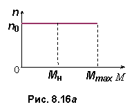

8.5.5. Механическая характеристика двигателя
При увеличении момента сопротивления Мc угол рассогласования Θ, механическая мощность P2 на валу СД и потребляемая из сети электроэнергия будут расти. Однако частота вращения ротора будет оставаться постоянной, равной n0. Увеличение момента Мc (перегрузка), ведет к выпадению двигателя из синхронизма и остановке ротора. При этом ЭДС Eя = 0 и ток якоря резко увеличивается, так как
I = (Uф – Eя) / jXc = Uф / jXc.
I = (Uф – Eя) / jXc = Uф / jXc.

Итак, при угле Θ < π / 2 механическая характеристика синхронного двигателя n0 = f(М) абсолютно жесткая (рис. 8.16). Она представляет собой прямую, параллельную оси абсцисс. Такая зависимость определяется характерной особенностью синхронных двигателей: их ротор может вращаться только с синхронной частотой n0 = 60f1 / p.
Изменение направления вращения ротора (реверс) СД достигается изменением последовательности фаз напряжения трёхфазной питающей сети, для чего меняют местами любые два провода, подходящие к зажимам обмотки статора.